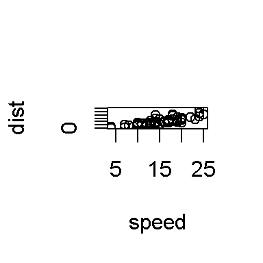
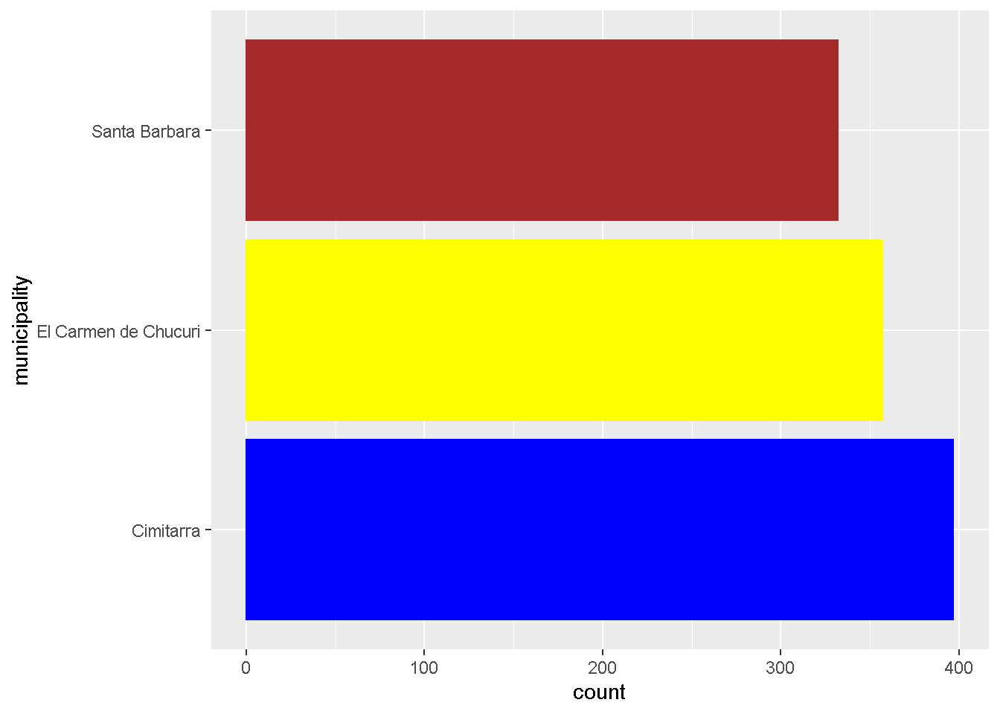
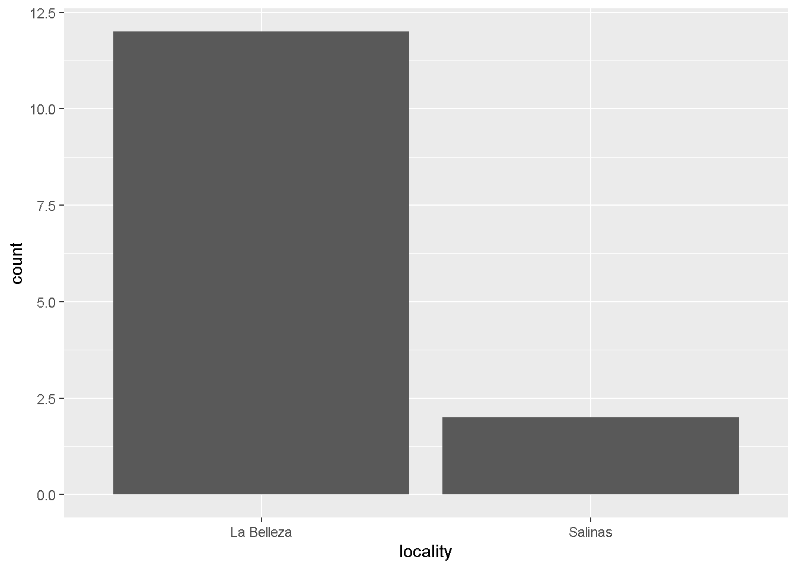
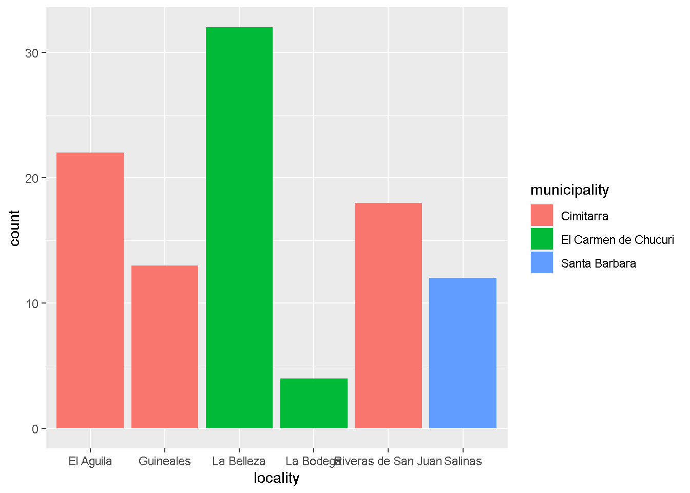
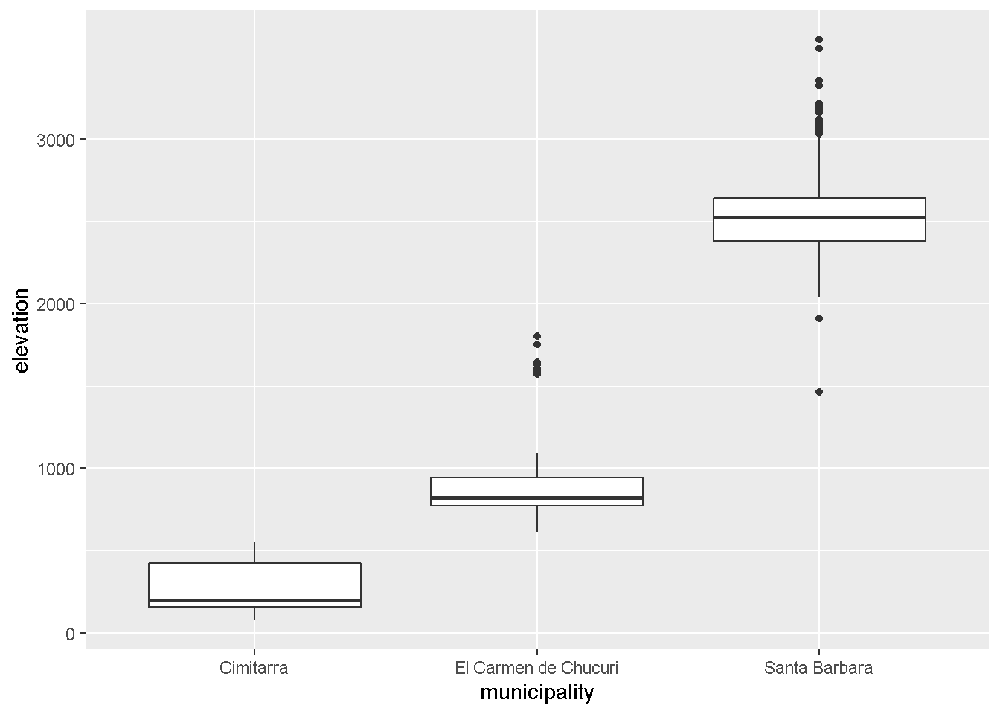
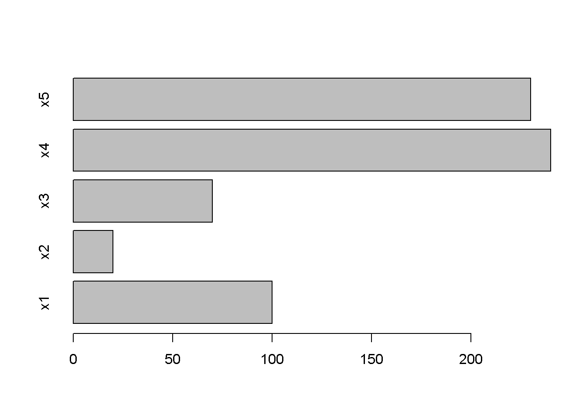
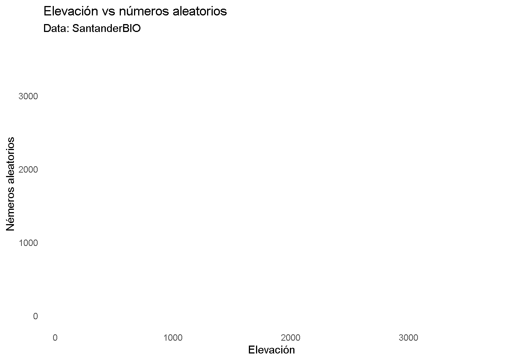
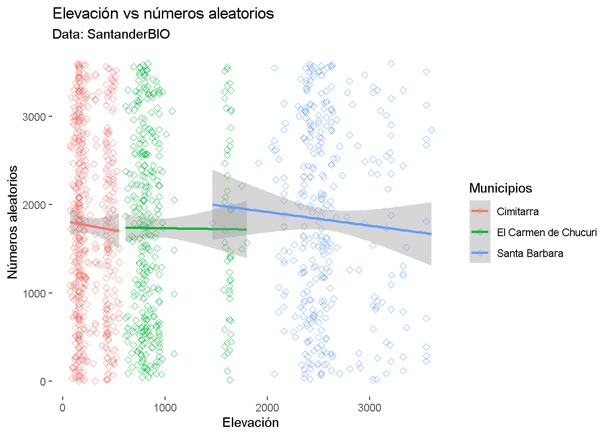
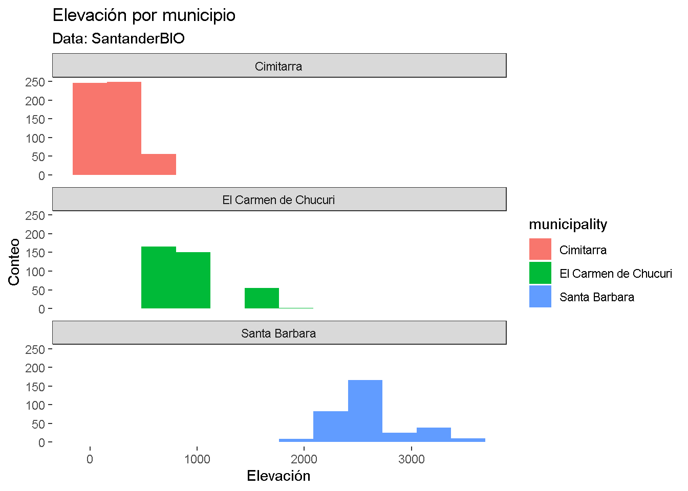

Chapter 3 Visualización de datos en R
En esta sesión vamos a explorar las herramientas en R para realizar gráficos a partir de datos, además revisaremos los diferentes elementos que permiten personalizar un gráfico.
Esta información puede ser complementada visulizando el video #3 del curso.
3.1 Gráficos y diagrama de dispersión simple
3.1.1 Diagrama de dispersión: función plot()
comenzamos generando algunos datos a graficar:
x <- 1:10
y <- 1.5 * x + seq(from = 1, to = 30, by = 3) # El diagrama de dispersión puede ser escrito de dos formas:
plot(x, y)plot(y~x)
Con el argumento “type” es posible cambiar la disposición del diagrama de dispersión:
plot(x, y, type="l")
plot(x, y, type="b")
plot(x, y, type="c")
plot(x, y, type="o")plot(x, y, type="h")
plot(x, y, type="n")
3.1.2 Etiquetas de la gráfica: xlab, ylab, main
plot(x, y, xlab = "eje x", ylab = "eje y", main = "Titulo del grafico", type = "n")
points(x , y, col = "red", pch = 19)
lines(x, y, col = "blue")
¿Qué ocurre aquí? Por favor explique:
plot(x, y, xlab = "eje x", ylab = "eje y", main = "Titulo del grafico", type = "n")
points(x + 0.5, y, col = "blue", pch = 15, cex = 5.5) 
¿Para que son los argumentos “pch” y “cex?”
?points## starting httpd help server ... doneEjercicio 1
Haga una linea en zigzag con puntos de colores en los puntos de giro
Haga una carita (:|)
Más gráficos: {-}
x <- seq(from = 0, to = 2 * pi, by = 0.2)
y <- sin(x) #Función seno
plot(x, y)
z <- cos(x) #Función coseno
lines(x, z) # Agregando líneas al gráfico anterior
points(x, z * 0.5, pch = 16) # Agregando puntos al gráfico anterior 
## De nuevo, eje, etiquetas y título
plot(x, y, xlab = "eje x", type = "l", ylab = "eje y", main = "Curva sinusoidal")## Cambiando la extensión de los ejes X y Y usando "xlim" y "ylim"
plot(x, y, xlab = "eje x", type = "l", ylab = "eje y", main = "Curva sinusoidal",
xlim = c(-1, 7), ylim = c(-2, 2))plot(x, y, xlab = "eje x", type = "l", ylab = "eje y", main = "Curva sinusoidal",
xlim = c(2, 4), ylim = c(0, 1))
3.2 Demostración de la versatilidad de la gráfica
La representación gráfica en R es muy flexible. Vamos a cambiar mas parametros gráficos:
- ‘cex’: escala de simbolos (tamaño)
plot(x, y, cex = rep(1:8, times = 4))
- ‘pch’: cambia el simbolo de los puntos
plot(1:25, 1:25, cex = 2, pch = 1:25)
- ‘col’: colores de los puntos. En R se encuentran disponibles mas de 600 colores
a <- rep(1:55, times = 10); b <- rep(1:10, each = 55)
plot(a, b, pch = 19, cex = 2, col = colors()[-c(260:361, 653:657)])
Los gradientes de colores tambien son posibles: ?rainbow
plot(1:100, 1:100, pch = 19, cex = 3, col = rainbow(100))
Los símbolos del 21 al 25 (?points) pueden tener diferentes colores de relleno
plot (1:25, cex=2, pch=1:25, col="blue", bg="red")
Ejercicio 2
- Consulte la pagina web de Quick-R para ver ejemplos de diagramas de dispersion (http://www.statmethods.net/graphs/scatterplot.html) y elija uno que explique a sus colegas.
3.3 Barras, cajas e histogramas
Algunas de las gráficas más populares para presentar y explorar datos son las barras (conteo de observaciones), cajas (estadísticos de nuestros datos) e histogramas (frecuencia de valores)
En R, estas gráficas se realizan mediante las siguientes funciones:
?barplot() ?boxplot() ?hist()
Vamos a explorar estas funciones.
3.3.0.1 Barplot:
Si queremos observar el número de registros de nuestras variables, podemos hacerlo mediante un gráfico de barras. Para poder graficarlo necesitamos un vector o matriz que contenga valores numéricos
x <- c(100,20,70,240,230)
barplot(x)barplot(x, names.arg = c("x1", "x2", "x3", "x4", "x5")) #Asignamos nombres a cada barrabarplot(x, names.arg = c("x1", "x2", "x3", "x4", "x5"), horiz = TRUE) #Podemos invertir los ejes
barplot(x, names.arg = c("x1", "x2", "x3", "x4", "x5"), ylim = c(0,100)) #Podemos limitar el valor de los ejes
Ejercicio: Agregar colores diferentes a cada barra, nombres a los ejes y un título a la gráfica anterior
3.3.0.2 Boxplot:
Mediante boxplot podemos hacer gráficos sencillos que nos muestren los estadísticos de nuestros datos.
data(iris)Cargamos un set de datos predeterminado en R y observamos su contenido.
Este conjunto de datos de iris da las medidas en centímetros de las variables longitud y anchura de los sépalos y longitud y anchura de los pétalos, respectivamente, para 50 flores de cada una de las 3 especies de iris. Las especies son Iris setosa, versicolor y virginica.
boxplot(iris$Sepal.Length) # En este boxplot podemos ver la mediana (linea negra central), los cuartiles 1 y 3 (area gris) y los valores atípicos o outliers (lineas extremas) de la variable longitud del sépalo de todas las especies 
boxplot(Petal.Length ~ Species, data = iris) #Podemos graficar los estadisticos para cada grupo usando el simbolo "~"
¿Qué pasa si invertimos las variables?
3.3.0.3 Histograma:
Finalmente, mediante un histograma podemos explorar frecuencias de valores
hist(iris$Sepal.Length) # En el gráfico, observamos la frecuencia (eje Y) y el rango de valores que toma la variable (eje X)
hist(iris$Petal.Width, col = "yellow")Ejercicio:Explore los diferentes argumentos dentro de cada función.
3.4 Función par()
Por medio de la función par() podemos ajustar distintos parámetros de nuestra gráfica, así como presentar más de una gráfica en el mismo espacio, modificar colores, texto y muchas otras características.
?par
opar <- par() #Antes de empezar a utilizar par, guardamos la configuración por defecto en un vector para poder reestablecerla más adeltante
dev.off() #O podemos cerrar los plots creados anteriormente para reestablecer la configuración
- null device
- 1
dat_dias <- data.frame(
dias = c("lunes", "martes", "miercoles", "jueves", "viernes"),
ganancias = c(20,35,40,10,27))Visualizaremos dos gráficas en el mismo espacio mediante el argumento “mfrow.”
par(mfrow = c(1,2))
barplot(dat_dias$ganancias, main = "Barras", names.arg = dat_dias$dias)
pie(dat_dias$ganancias, labels = dat_dias$dias, main = "Torta", clockwise = T)
Ejercicio: Utilice el argumento “bg” para cambiar el color de fondo del siguiente plot
plot(x = c(1:10), y = c(11:20))
par(mfrow = c(1,1), bg = "green")
plot(x = c(1:10), y = c(11:20))
Con “bty” podemos cambiar la forma de la caja del plot:
par(mfrow = c(1,1), bg = "white", bty = "l") #Pruebe cambiando "l" por o,7,c,u,],n
plot(x = c(1:10), y = c(11:20))
Podemos agregar colores a los diferentes elementos del gráfico
par(mfrow = c(1,1), bg = "white", col.axis = "blue", col.lab = "green", col.main = "red", fg = "yellow")
plot(x = c(1:10), y = c(11:20), main = "Dispersion")
Para cambiar la fuente del texto:
- font.axis (valor numérico)
- font.lab
- font.main
- font.sub
Ejercicio 3
- Explore los siguientes argumentos disponibles en par(), explique su función y utilícelas en una gráfica
- las
- lty
- lwd
- fig
- mai
- pin
- new
par(mfrow = c(1,1), bg = "white", las = 3, lty = 3, lwd = 5, pin = c(1,2))
plot(x = c(1:10), y = c(11:20), main = "Dispersión")
3.4.1 Gráficos compuestos
Usando algunas de las funciones anteriores, podemos ajustar varias figuras en un plot
datos_aleatorios <- runif(100)
par(cex=0.7, mai=c(0.1,0.1,0.2,0.1), fig=c(0.1,0.7,0.3,0.9))
hist(datos_aleatorios) # Configuramos el tamaño de nuestro histograma y lo graficamos
par(fig=c(0.8,1,0,1), new=TRUE) # Configuramos la posición de un boxplot y agregamos new para que no limpie el gráfico anterior
boxplot(datos_aleatorios)
par(fig=c(0.1,0.67,0.1,0.25), new=TRUE)
plot(x = datos_aleatorios, y = datos_aleatorios + 10) # Y añadimos un gráfico de dispersion de otro set de datos